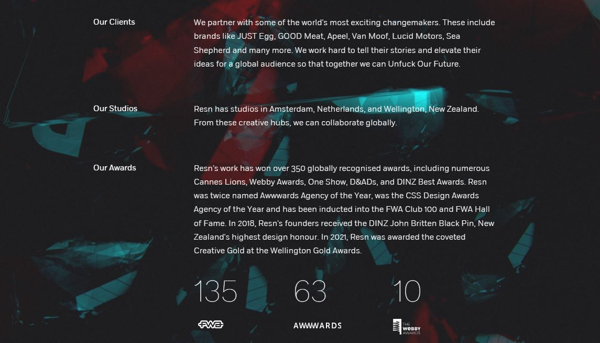
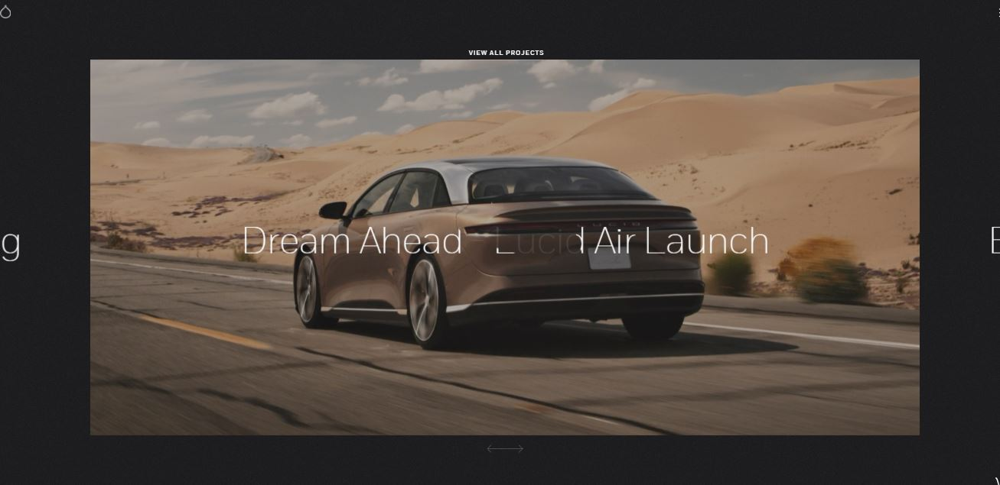
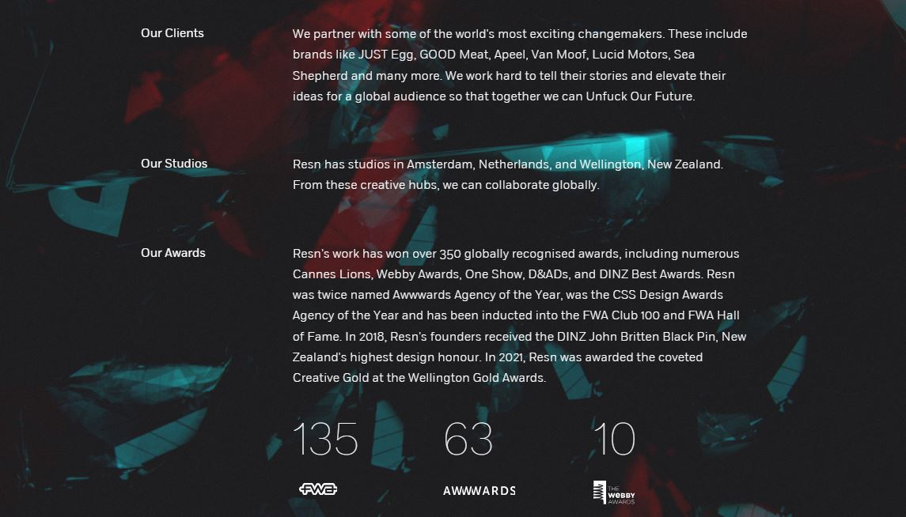
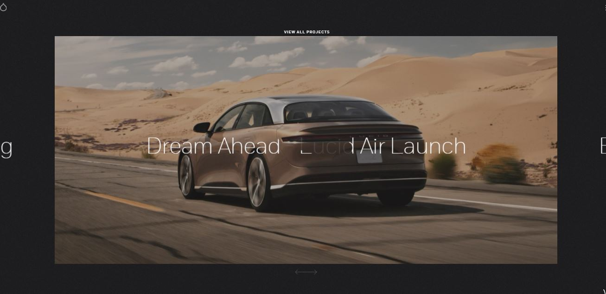
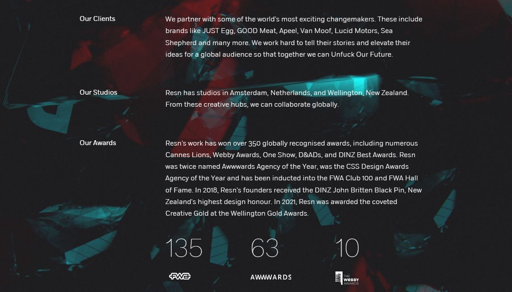
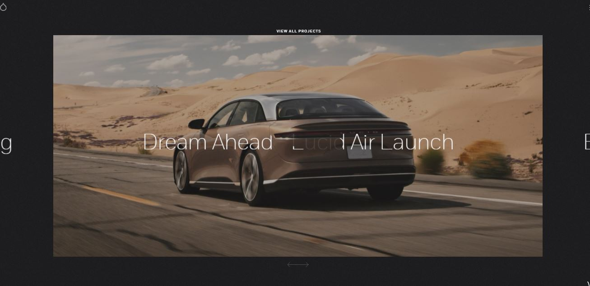

La web tiene problemas de legibilidad sobretodo en os gráficos y es una pena porque el uso de la tipografía y como mostraban la progresión eran vistosos pero por esa falta de contraste se pierde legibilidad. Utilizan el blanco y negro es sencillo pero tiene muy buena legibilidad salvo el título y los gráficos de barras. El único punto de color en este caso son los trabajos de los distintos artistas que consiguen llamar la atención al usuario de la web.
La web usa el método de colocarlo todo en el centro el antiguo responsive pero es verdad que lo organizan bastante bien situando en el centro una línea de tiempo la cual sitúan los trabajos de los artistas. En la parte de debajo de la fotografía vemos situada información acerca del proyecto la fotografía no está rellenando completamente el cuadro inferior sino que deja un espacio para poder incluir una puntuación, en la segunda parte de la web la imagen no va de dos en dos si no de una en una ya que el usuario tiene mucho interés al llegar ahí querrán investigar más.
La funcionalidad es muy completa a la hora de captar el interés del usuario ya que los hover que tiene nos dan una nueva opción de uso, su menú está anclado en la parte superior de la página en el que oferta sus distintos productos y en la izquierda tiene su menú hamburguesa además de la lupa para una búsqueda más rápida si estas familiarizado con la web. En la parte inferior vemos otro elemento el cual ofrece un resumen de los ganadores en los que se puede acceder por años y meses es bastante intuitivo y fácil de usar. Esta web funciona más como un anuncio priorizando en promocionar los distintos trabajos de los creativos.
La web es bastante entretenida ya que usa un scroll casi infinito en el que usa secciones completas para actuar como separador, las imágenes no son estáticas sino que son videos con una leve transición lo cual hace que llame la atención y van transicionando a otros videos del funcionamiento de las distintas webs. No agobia con mucha información sino que van estructuradas según el interés del usuario primero vemos una información inicial luego unos gráficos y por último el grueso de la información. La web cumple su misión de promocionar las distintas obras de los artistas además que al ser bastante simple no caemos en distracciones teniendo claro todo el rato que es lo que estamos haciendo.
La web usa el contraste de claro oscuro para darle una imagen más profesional a su página web usa sus trabajos a modo de escaparate pero corren un riesgo a la hora de publicitar algún trabajo que use tonos oscuros. Los colores que usan para el fondo aunque tratan de darle color suelen ser escalas de grises y tonos oscuros para no quitarle protagonismo a los textos e imágenes.
La maquetación tiene diferentes muestras en este caso en su historia centra el texto para que sea lo más responsable posible pero deja bastante fondo entiendo los colores del fondo para rellenar los vacíos de la web, en cuando a como presentan los trabajos cambia en buen sentido usa un scroll horizontal y al darle click en la tipografía aparece la imagen que es un link a otro html el cual reúne más información en este caso de cómo se hizo el proyecto aquí su maquetación es más dinámica.


La web es muy funcional desde la gota de diamantes que reacciona al movimiento del ratón la web presenta muchos iconos de subir y bajar que ayudan al usuario. La función de la web es ser un escaparate lo que hace que en todo momento estés viendo algún trabajo algo que no he visto en la primera web es que usan el sonido como herramienta en la web de inicio cosa que si me llamó mucho la atención.

La web carece de problemas.Pero es es demasiado limpia sobretodo en la web de inicio echo de menos un texto que me dé alguna pista ya que el momento exploración dura un minuto pero es algo que si hubiese optado por poner en todo lo demás es bastante completa.
La web es muy ecléctica tiene un estilo muy marcado y desenfadado bastante juvenil, esta usa todo lo que tiene para potenciar la web desde transiciones dinámicas con la pantalla de la cabecera hasta los detalles de movimientos, usa imágenes coloridas con formas dinámicas sobre fondos blancos para maximizar su impacto es la más divertida visualmente.

La web usa las pautas de presentar solo dos trabajos haciendo un scroll vertical, pero aquí sí que pierde un poco su identidad tan marcada se siente como una web más antigua los títulos no parece bien maquetados entiendo el estilo que le querían dar pero pierde un poco. Además que sabemos que incluir un video en la web pesa mucho el video no parece que esté maquetado y pierde bastante.
La web es muy interactivo casi todo funciona y no es decorativo salvo un problema que he notado que es que no puedo interactuar con unos botones lo intente de mil maneras pero no funcionan lo cual fastidia la experiencia del usuario. En cuanto su menú aunque es escaso funciona bastante bien dejándolo claro rompiendo con los tamaños de la web y rompen la maquetación en alas de la funcionalidad en este caso siendo un elemento disruptivo.
La web es muy única y fácil de recordar pero tiene fallos muy extraños a los que no les se dar explicación, pero esos fallos no son tan graves para que su funcionamiento se vea afectado es muy imaginativa y su paleta de color es muy convincente.
Esta es una web muy experimental desde el inicio en que descubres que las imágenes están hechas por IA cosa que no he visto en ninguna web el uso de los tonos oscuros es efectivo además de las imágenes. Se basa en el blanco para las tipografías resalten sobre el fondo negro. Al clickear las imágenes cargan con el color lo cual renueva la web pero en menor medida.
La maquetación me ha llamado la atención ya que la imagen central de la galería podría ser perfectamente la homepage y quedaría increíble en la web pero no es así. Las imágenes se sitúan al centro de la pantalla para así ser más adaptable pero hasta ahí termina la maquetación una pena ya que la web parecía el portfolio de un buen fotógrafo.
La web no es muy funcional que digamos salvo la imagen central mencionada en la maquetación que si me ha parecido una buena idea. Todo lo demás se concentra en esquinas dejando mucho espacio en negro algo que resulta curioso además de que la tipografía no tiene ninguna hegemonía no hay ninguna que destaque para llamar la atención al usuario.
Esta web está hecha por una IA no solo las imágenes o no se ha tomado mucho en cuenta los criterios de maquetación.